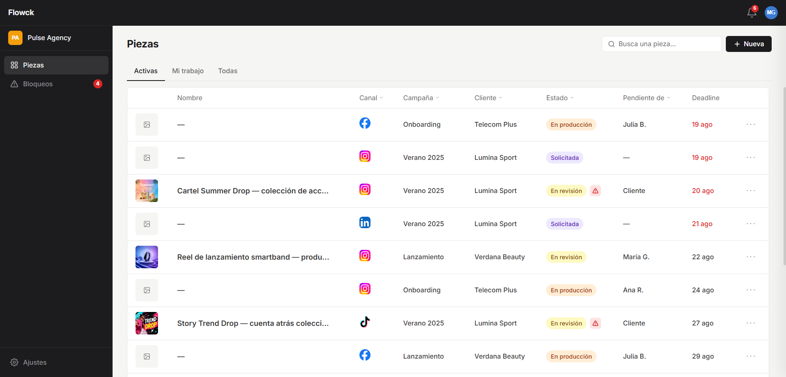

Flowck
Todo a la vista, adiós al caos
Flowck nació de la frustración que sentí cuando trabajé en marketing. Me ocupaba de coordinar el contenido que publicábamos y a menudo me topaba con los mismos obstáculos:
- No sabía si el trabajo se había empezado ya o por qué no estaba listo aún
- El feedback de revisión llegaba tarde
- Buscar el contexto de cada pieza era tedioso
He creado una herramienta para equipos pequeños de marketing, que acaba con el estrés que produce la falta de visibilidad operativa. Funciona a través de un sistema que centraliza todo lo que un equipo necesita saber sobre su contenido. Sin perseguir. Sin preguntar.
RESEARCH Y DISCOVERY
Quería ver si mi problema ya se resolvía
Encontré los productos más potentes, Filestage, Ziflow y Wrike. Se trata de suites grandes, densas y caras, que resuelven bastante bien una parte del problema: la revisión y aprobación de piezas de marketing. Pero sabía de primera mano que desde que se piden hasta que se publican hay varias fases que deben pasar, y es justo ahí donde encontré el nicho de mercado. Ninguna plataforma daba visibilidad al ciclo de vida completo del contenido ni a todo su contexto.
Hice hipótesis y escuché a quien lo vivía
Conocía las limitaciones que tiene trabajar en un equipo pequeño. No hay dinero para herramientas caras como las que encontré, así que se utilizan métodos poco prácticos. Di por hecho que necesitaban un sistema para ser más eficientes, pero primero quise confirmarlo.
Tras realizar entrevistas a diferentes perfiles, me di cuenta de que todo se reducía a la falta de visibilidad. Estas fueron algunas de las citas que encarrilaron el enfoque de mi solución:
"Tienes que perseguir o tienes que estar pendiente de a ver cuándo lo hace, porque no tienes visibilidad."
Growth Marketing Manager
"Es un poco caótico seguir la conversación."
Content Creator
"Añadiría no tener la instrucción clara de a quién le toca actuar."
Content Manager
Quería ver qué decían los números
Para cuantificar y contrastar mis conclusiones, envié varias encuestas:
A menudo no sabían quién debía actuar a continuación
Siempre perdían tiempo en recopilar el feedback de revisión de cada pieza
A menudo no sabían qué frenaba el avance del contenido
Encontré el impacto negativo en el negocio
Aunque parezca un problema puramente operativo, su efecto final es económico. Basta una estimación sencilla para verlo: con que un equipo de 5 personas dedique solo 5 horas semanales al seguimiento y la coordinación, valoradas en 30 €/hora de coste interno, ya está perdiendo 7.800 € al año. En este escenario ni siquiera tenemos en cuenta el impacto negativo de publicar tarde a causa de la baja eficiencia.
Si son 10 horas semanales: -15.600 € al año.
DECISIONES DE DISEÑO
Una vez identifiqué los problemas reales, comencé a construir Flowck. Su mayor ventaja es que resuelve los puntos de dolor sin que se deba preguntar nada, lo cual aumenta la eficiencia exponencialmente:
¿Cómo saber en qué punto está el trabajo?
Mediante estados que representen las fases del ciclo completo del contenido, no solo si una pieza está aprobada o no. De esta manera, hay un seguimiento desde que se solicitan hasta que se publican.
¿Cómo saber quién debe actuar en todo momento?
Mediante un campo llamado "Pendiente de". Hace visible quién tiene que moverse en cada fase del ciclo de vida del contenido, para avanzar hacia el objetivo final: la publicación.
| Nombre | Pendiente de | |
|---|---|---|

|
Reel de lanzamiento smartband | Julia B. |
¿Cómo saber por qué el trabajo está parado?
Mediante una sección de producto dedicada a lo más urgente: desbloquear el contenido que no avanza. Así lo que lo frena nunca es un enigma y se puede atacar el problema rápidamente.

¿Cómo ganar tiempo recopilando feedback de revisión?
Mediante la unión en un mismo lugar de la parte visual y escrita. Cada pieza se compone de una imagen y un texto. Me di cuenta de que solo se resolvía la revisión y aprobación de la parte visual, pero la escrita seguía dispersa entre canales de comunicación.
Llevando esa idea un paso más allá, pensé en las agencias de marketing. Crean contenido para otras empresas, así que también cuenta la opinión del cliente. Flowck reúne la voz del equipo y la del cliente junto al contenido.
CONSTRUCCIÓN CON IA
No usé una sola herramienta, sino un conjunto de ellas. Cada una me ayudaba a avanzar más rápido en cada fase del proceso.
De las pantallas estáticas al código
Mi método consistió en crear las tres pantallas principales del producto en Figma, para volcarlas en Claude Code como referencias.
Del código al producto real
Luego iteré cada detalle bajo mi criterio, y subí el proyecto a producción con GitHub y Vercel. Quería tener algo que probar, fiel al enfoque, no simples pantallas estáticas.
 ChatGPT
ChatGPT
 Claude
Claude
 Figma
Figma
Claude / Claude Code
Claude Code
Figma
Figma
Claude / Claude Code
Claude Code
 GitHub
GitHub
 Vercel
Vercel
RESULTADO
El resumen de mi solución en una imagen
El problema real era la falta de visibilidad sobre el ciclo de vida de cada pieza de marketing. Es por ello que la Home de Flowck debía ubicar rápidamente, capturando el máximo contexto operativo posible.
